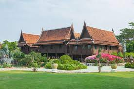

ศิลปะวัฒนธรรมไทย บ้านเรือนไทย
เรือนเครื่องสับ
- เรือนประเภทนี้เป็นเรือนที่ต้องใช้คาใช้จ่ายในการสร้างสูง ในอดีตจึงพบเห็นได้เฉพาะบ้านคนมีฐานะเป็นส่วนใหญ่
เนื่องจากเป็นการสร้างด้วยงานฝีมือล้วนๆ และวิธีการที่ซับซ้อนหลายขั้นตอน ไม้ที่ใช้ต้องผ่านการเลื่อย ถาก
สับ ไส ให้สวยงามเสียก่อน จะใช้การรวมฝาเข้าปากไม้
แต่อาจจะมีการใช้เดือยไม้สำหรับเพื่อความแข็งแรงของการเชื่อมต่อด้วย ซึ่งประโยชน์ของเรือนเครื่องสับคือ
เราไม่ต้องใช้ตะปูเลย เรือนประเภทนี้มักจะใช้ไม้สัก เพราะทนทาน และใช้งานได้นาน และเสาเรือนจะใช้เป็นไม้เต็ง
ไม้รัง และไม้แดง อย่างไรก็ตาม ในอดีตการสร้างบ้านด้วยไม้สักจะสำหรับเฉพาะบ้านคนที่มีเงินเท่านั้น
ส่วนชาวบ้านจะใช้ไม้ที่มีอยู่ในท้องถิ่นทั่วไปแทน

อ้างอิง
https://www.bareo-isyss.com/service/architecture/%E0%B8%9A%E0%B9%89%E0%B8%B2%E0%B8%99%E0%B9%80%E0%B8%A3%E0%B8%B7%E0%B8%AD%E0%B8%99%E0%B9%84%E0%B8%97%E0%B8%A2/#:~:text=%E0%B9%80%E0%B8%81%E0%B8%A3%E0%B8%B4%E0%B9%88%E0%B8%99%E0%B8%A1%E0%B8%B2%E0%B8%82%E0%B8%99%E0%B8%B2%E0%B8%94%E0%B8%99%E0%B8%B5%E0%B9%89%E0%B9%81%E0%B8%A5%E0%B9%89%E0%B8%A7,%E0%B9%80%E0%B8%A3%E0%B8%B7%E0%B8%AD%E0%B8%99%E0%B8%84%E0%B8%A3%E0%B8%AD%E0%B8%9A%E0%B8%84%E0%B8%A3%E0%B8%B1%E0%B8%A7%E0%B9%80%E0%B8%94%E0%B8%B5%E0%B9%88%E0%B8%A2%E0%B8%A7